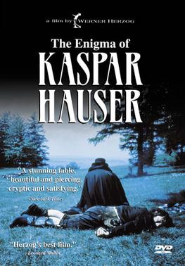

Werner Herzog
1974
110 minutes
At last we have a Werner Herzog film with "that weird little guy" in it, as your now-deceased friend would always refer to him. Something about Bruno S. always seems to lower your blood pressure a bit. He's strangely calming.
You reflect a bit on how many Herzog films hit a bit different when you actually speak German. Werner Herzog himself, with his thick accent and precise way of speaking, always manages to sound very funny to a native English speaker, particularly when he speaks English with his thick German accent. But when he speaks German, his voice sounds very clear and normal to you, and his accent in German is extremely easy to understand, almost like that of a newscaster. Bruno S. on the other hand, while also being very easy to understand, sounds hilarious in either language. His odd way of speaking and his very strange cadence carries through both in German and in English. It brings a smile to your face whenever you hear it.
You think back to your friend Roman, a Russian/Ukrainian exchange student who attended your high school. Roman was (and still is) a huge metalhead. He would always sit behind you in French class singing AC/DC and Nazareth songs and then asking you, "Do I have accent when I sing?" You would inform him that yes, indeed, he does have an accent when he sings and he would ask you to specify how--which is a surprisingly difficult question to answer. Roman spent a lot of time listening to his favorite songs by his favorite bands and singing along, which is actually not a bad way to learn a language.
As for yourself, you greatly enjoy singing karaoke songs with lyrics in French or Russian or German. You're certain that your pronunciation is imperfect, but you have no idea how. You rarely have occasion to do any of these around a native speaker, and certainly not with anyone you're comfortable enough to ask about how your accent sounds when you sing.
One of your favorite ways to chill when you travel is to find somewhere the natives are doing karaoke songs. Most of them end up being pop songs with English lyrics, and hearing intoxicated non-native speakers belting out these tunes with various degrees of quality and often hilariously heavily accented, is a fun and calming way to enjoy a little slice of home while in a strange land. In Ludwigshafen you heard a particularly stirring version of "Lemon Tree" by Fools Garden.
You're happy to say at least that when you've been abroad and tried to speak French you've at least had people compliment your accent (if not your fluency), but you also realize that the bar is very, very low...
Time to choose something different: